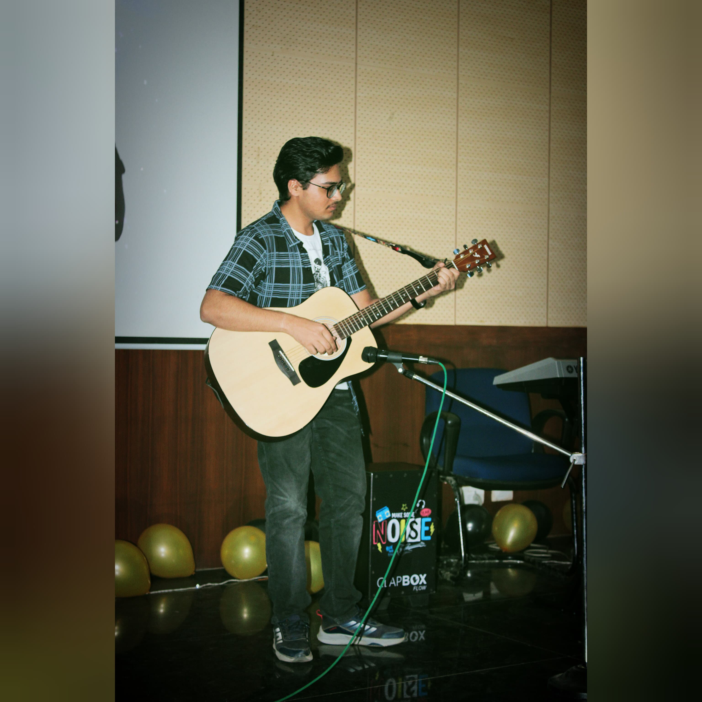

Our Team

Er. Aditya Mayank
Founder & Director
Musicologist specializing in Classical music with 15+ years of experience in academic research.

Unknown 1
Lead Researcher
Ethnomusicologist with expertise in African and Latin American musical traditions.

Unknown 2
Digital Archivist
Specialist in digital preservation with a background in library science and music technology.

Unknown 3
Educational Outreach
Former music teacher with a passion for making music history accessible to students of all ages.